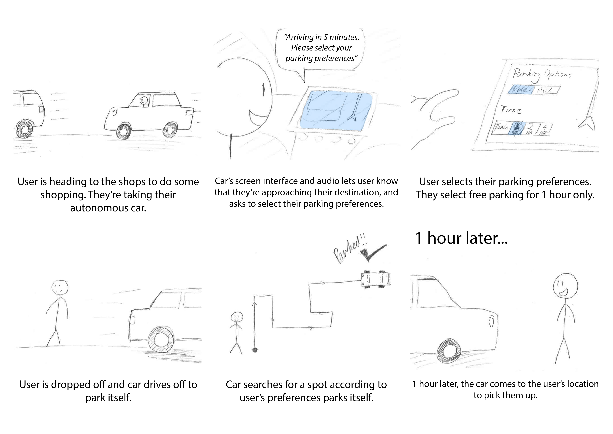

Interaction Design Studio 2018
Team: Darren Phung / Edmond Hua / Patrick Hwang
Role: UX / UI / Visual Design / Animation
As interaction designers, out main task is to map out interactions that will be required to assist people in interacting with autonomous vehicles in future cities. We are required to follow a user-centered design process focusing on interface and interface animation design. With autonomous vehicles becoming more prevalent, as a designer we need to start thinking how people in the future will interact with autonomous vehicles.
As the brief is incredibly broad, we need to pin-point and identify a problem to look at where
autonomous vehicles could be a part of the solution. We started with discussion and brainstorming,
ultimately leading to utilizing the brainstorming Brain-Dumping. Brain-Dumping involves writing down
any autonomous vehicle ideas possible. These ideas can be logical but also extremely ridiculous such
as an autonomous vehicle to possibly brush your teeth.
After much deliberation, we finalised on the
decision to focus on human interaction between autonomous cars and parking.
Our user research was conducted individually and brought together afterwards for synthesis and discussion. We conducted Interviews, Surveys and Immersion to gather rich, qualitative information.
A series of interviews were taken by drivers of all kind from drivers working full-time and driving to their workplace, driving to closer public transport or driving for leisure. Questions were varied to gauge how they used their cars on a weekly basis. Additional questions were asked concerning opinions of autonomous vehicles and their relationship with autonomous parking.
A short survey with similar questions to the interview was sent out to gauge a broader perspective on driving habits. Surveys were used to supplement the interviews in recognizing trends among drivers.
Exposing myself to the domain, technology, user type, context, etc. in the real world. This allows me to correctly understand what our users feel during the driving and parking process. I immersed myself in a large car park complex and analysed all the issues and pain points that can be translated into autonomous parking.
After gathering large amounts of data from our research, I collated and organised to produce information. I began categorising issues and needs that respondents had expressed throughout the research by creating an affinity diagram that would be the driving force throughout the whole design process.
After conducting user research, we came back together and began to synthesise our insights and brainstorm solutions to the main problems we identified. This began with some storyboards illustrating various ideas surrounding autonomous parking with autonomous vehicles.
Based off user research results, individuals felt the problem with parking and congestion was due to the
overall lack of driving skills in drivers.
HUD is an AI teaching system that is integrated into the user’s car, it teaches the user where and how
to drive. It uses Augmented Reality display integrated into the car windshield.
Connecting this mobile app to an autonomous car, they can allocate navigation as well as initiating
autonomous parking.
This phone app aims to eliminate the need for autonomous car owners to worry about the availability of
parking in their area or the availability of parking at their destination.
This concept is an In-Car User Interface used to self-park the car after the passenger alights. The interaction occurs through the car’s inbuilt information systems screen. Once the car arrives at the drop-off destination, it will queue the user to select parking preferences depending on Price, Time and Geography.
Ultimately coming down to choosing one concept to iterate and improve, concept 2 seemed to be most appropriate. We created mid-fidelity wireframes on Figma and created interactive prototypes on the Marvel App to simulate the phone app environment.
But in order to move forward and improve on our wireframes, we have to conduct a round of user testing.
The first of our Evaluation Methods was Think-aloud User Testing. For each of our
low-fidelity paper
prototypes, we each came up with one scenario and had one task that encompasses the entire process.
We noted any problems or issues encountered during the think-aloud, and post experience, we asked the
user for feedback and recommendations. Key problems identified during this study will be further evaluated
by the team through Heuristic Evaluation.
Our next user evaluation method was First Click Testing, this involved observing our user’s interactions with our wireframe. First click testing allows us to evaluate and understand the effectiveness and functionality of our wireframes, also giving us insights about how users differently approach their given tasks.
After user testing our wireframes and noting down appropriate changes it was time to create high-fidelity mock-ups representing the final concept. The mock-ups were created in Figma and Sketch while using google material design stylesheets to ensure our app had a consistent and professional feel. We decided to use green as a primary colour and using monotone colours such as grey, white and black to accent the green.
Once the screens were developed into high-fidelity mock-ups, a user flow diagram was illustrated and would assist us with understanding the information architecture and relationship between each screen.
At this point we conducted another session of user testing by importing our high-fidelity into a quick and easy prototyping tool called InVision. The prototype was loaded onto a phone and were given to the same users we tested our mid-fidelity prototypes with as well as participants around the area. We created tasks for the users to perform and their speed and body language is taken note. For example, we asked the users to select a parking spot and park for 3 hours, ultimately having 5 of our participants to successfully perform the task and 3 participants needing assistance.
Based on the feedback received in out testing we noted down some concerns our participants voiced and focused on the pain points that overlapped between each participant. We updated the suitable screens to fix issues such as visibility, flow and amount of information. The primary concerns were the aesthetical factors but due to the lack of animation this factor was overlooked. Additionally, another concern for the app was the lack of clarity of when the car would be arriving to the pick-up location and the difficulty of cancelling certain actions indicating we need to consider error prevention methods.
ParkOff! Has a number of UI animations that support its concept and presents a professional and aesthetically
pleasing user experience. Animations were done on Atomic.io, an open-source web-based program that run on google
chrome and perfect for collaboration. Working with Atomic.io was extremely easy as there was no coding used and
just a simple click and assigning preset transitions included in Atomic.io.
During the build, factors like speed of transitions and moving components were constantly altered to make the
animation as close as possible to material design motion guidelines. Atomic.io allows for the build to be
imported into a phone to simulate its appropriate environment.